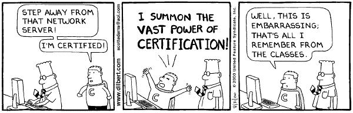

You might feel that you're not yet qualified to enter the job market as a developer. You're wrong. There is a huge need right now for programmers to create and maintian the types of static web sites and simple web applications that you've already proved you can build in class. More experienced developers are too busy solving harder problems to do this more basic work. It's up to us!
Imposter syndrome will follow you throughout your career, and the more you learn about programming, the further behind you'll feel. That's okay, you're not being hired to know and do everything programming-related. You're being hired for a very specific set of skills which add value to a company.
Our job is to put our best foot forward and engage with the hiring process in good faith. Let the company determine whether we'll be able to fulfill their technical needs. I think you'll be surprised...
Github
- Have one marquee project with immaculate code. Clean up the code to:
- have good file and folder structure
- add comments explaining complex code
- use descriptive variable names
- remove
console.logs and unused, commented-out code
- indent and space consitently
- create a professional-looking
README.md that displays when you open the repo on GitHub
- Collect all of the random code snippets you've written during exercises, etc into a single repo and add it as something innoculous like
code-experiments
- Post to Slack, asking classmates to star and watch your marquee repo. Do the same for their's.
LinkedIn
- Make your current title something like "Freelance Front End Web Developer"
- Link to your portfolio site
- Describe projects prominently using keyword-rich language and link to GitHub and the live deployed versions
- Tweak past job descriptions to emphasize technical aspects
- Post your profile to Slack and ask classmates to endorse you for the following skills: (and do the same for them)
- HTML
- CSS
- JavaScript
- jQuery
- Any other languages, libraries, or technologies you've used
- Connect with technical recruiters
Portfolio
Create a personal site that features an impressive splash page and 30 seconds of scannable content that would convince a hiring manager that you're potentially a good hire. You can build your own and host it on divshot or skip it and set up an about.me profile. Include:
- One marquee project, link to source code on GitHub and live deployed version.
- An About Me section featuring a smiling picture and a short paragraph that makes you seem like a competent and enjoyable co-worker.
- Potentially two programming-related blog posts discussing anything technical.
- Links to your GitHub and LinkedIn profiles
- A note that says: "I'm currently on the job market" and a way for employers to get in touch.
Resume
Unless you're applying to larger, more traditional companies, it's an afterthought. Do this as quickly as possible and move on:
- Adapt your current resume's job description bullet points to include anything remotely technical
- Add a link to your GitHub profile prominently in the header
- Add a link to your portfolio site
- Add Projects as the first section, above your non-technical experience. Bullet pointed list:
- One sentence description of what the app is and what technologies were used (HTML, CSS, JavaScript, jQuery, and any other 3rd party libraries)
- Link to GitHub repositories and live deployed versions
Cover Letter
Goal: Convince the hiring manager as concisely as possible that you are competent, passionate, and worth investing the time in interviewing.
Create a templated email to use as a base. The overall structure and description of yourself will stay the same. Customized for each letter:
- The name of the company and position you're applying for
- one sentence: what interests you about this company and position specifically
- one sentence: why you'd do a great job in this role
YES: I'm very interested in the Ed Tech space, and I've been hearing great things about EdKids's new Fun Kids Code initiative, so I'm excited to jump in and contribute! Reading the source code of your website, I see you use a lot of jQuery, which I love working with myself.
NO: I was going down the list of companies on AngelList and there you were so I hit the "apply" button. I'd work pretty much anywhere because I'm desperate for a job, but I'll probably leave again soon because I'm not really sure what kind of programming I like to do yet.
Copy & paste the rest of the cover letter, which will be the same for all jobs. Emphasize:
- Confident
- Passionate about programming
- Elongate your professional narrative
- Tie in past, non-programming work
- Link to portfolio site
- Link to deployed projects and Github
- Ask for the sale
YES:
Ever since programming my TI-82 calculator to tell fart jokes in Middle School, I've loved technology. Even when working as an Account Manager, I'd create web pages for my co-workers. Recently I've decided to professionalize my passion, and have focused my studies on Front End Web Development.
To that end I've built and deployed an app called Foodiies using HTML, CSS, JS, and jQuery to remind people to eat food everyday. It was so fun to build and I learned a ton! Here is a link to the source code on GitHub and to the live, deployed version. You can also check out my professional portfolio site for more background and to see my other projects.
Can we discuss later this week? How does Thursday morning look on your end?
NO: I've worked as an office assistant, which is pretty boring and I want to make more $$$ so I took this one class on how to program and now I want a job even though I'm not very good yet. You can email me back if you want.
Applying for Jobs
Getting job offers is a numbers game. You'll want to apply for every job titled Front End Developer or JavaScript Developer in the greater Bay Area. Keywords are: HTML, CSS, JavaScript, jQuery. Numbers break down thusly:
- Apply to 100 companies
- Phone screens with 30
- Onsite interviews with 10
- 2 job offers
The key metric is job applications per hour. Set daily goals, track your progress, and maintain accountability. Here's the game plan:
- Search job boards for the keywords Front End or JavaScript:
- AngelList
- Stack Overflow Jobs
- GitHub Jobs
- Hacker News Who's Hiring
- White Truffle
- CraigsList
- Dice.com
- and more...
- Spend ~1 minute per company assessing potential fit. Of every 3-4 you look at, you should probably find one worth applying to.
- Spend ~5 minutes customizing the first two sentences of your cover letter, assembling materials, and hitting send
More tips:
- Leverage your personal network. Warm leads and being referred by a current employee are hugely more effective than cold contact.
- Talk to people at meetups and be candid about your job search. Ask for contact information and follow up requesting they pass along your application materials to the hiring manager.
- Don't be discouraged at all by "4-year degree or equivalent experience". That phrase means "don't apply if you don't know how to code".
- Don't be discouraged by "2-3 years experience required." That phrase means "don't apply if you don't know how to code". More might be a problem.
- Don't be discouraged by huge lists of "requirements" unless you're missing more than half of them. They're more like a wish list. Communicate that the skills and experiences you do have indicate that you'll be able to pick up the rest quickly and easily.
- Follow up after two working days of silence, unless you've already discussed next steps. If they've missed a planned next step, email them within a day. Proactiveness and persistence is not annoying if done politely and appropriately. They show that you're organized and enthusiastic.
- If you apply through a form, spend two minutes looking for an email address and follow up there as well (maybe through LinkedIn or Google). Emailing a specific person rather than "jobs@" is best.
- Don't spend too much time agonizing over whether you'd want to work there before you even apply. It's impossible to know what it's really like day-to-day until you go on-site.
Interviews
Once a company has scanned your online presence and decided you have potential. 80% of your likeliness to be hired comes from technical interviews. Usually the process goes something like this:
- You submit your application
- A non-technical recruiter sets up a call to discuss in a conversational way what the position entails and your background.
- A 30 min to 1 hr technical phone screen where you'll be asked a tightly-scoped programming question to make sure that you're in the right ballpark in terms of technical skills
- A 2 hour to full-day on-site interview to solve programming challenges, maybe on a whiteboard, and maybe by pair programming with their developers.
How to prepare:
- Use a site like CodeWars to practice solving small, focused problems with code. Start with the easiest and work your way up. Do at least two or three every day. You should probably have 50 or 75 total under your belt by the time you're done.
- Google "glassdoor companyname interview questions" before your interview to better understand what kinds of questions you'll be asked
- Always be ready with your own questions about the company when asked. It shows that you're serious and engaged. Here's a good starting point
Some further considerations:
- Politely and innocently mention that you're "exploring a number of opportunities" and "have a lot of irons in the fire". It raises the buying temperature.
- Ask about the timeline for the next milestones at each step in the process and be proactive in staying in contact and moving things along. Insinuate that you may have other "opportunities" that you'll have to "make a decision on soon" to generate a sense of urgency.
- "What are our next steps?"
- "When should I follow up about coming on site?"
- "What's our timeline moving forward?"
- "When will we know about next steps?"
- Follow up with each person you have phone or in-person contact with, with a brief "thank you note". It's classy and keeps you top-of-mind.
- Try to apply to jobs and set up interviews in a cluster so that you receive offers around the same time and thus have negotiating leverage.
Closing the Deal
- Ask for time to consider an offer if you need it, or say "I'm currently waiting on another incoming offer, but if you could accomodate me by (higher salary/ other request), I'd be willing to end my job search prematurely and sign on."
- Negotiate. Don't ever accept an offer without asking for a $10k bump. It's a very simple email to write (it can be as short as "Could you do $X+10?") and it's very effective. Don't feel bad, it's an established part of the tech hiring culture. The worst that can happen is they make some lame excuse like "oh sorry, the company-wide pay scale is set by our CEO" and you've lost nothing.
- Don't worry about the following:
- Job title: it's pretty much meaningless in this field
- Company size: Smaller companies give you broader experience, but bigger companies have more experts and more time to nurture you. It's a wash.
- Select primarily for how much your gut tells you you'll enjoy working there and how much you think you'll learn
Okay, that's it. You did it! You win! World champion! Bravo! I now pronounce you to be a programmer. All grown up. Now let's get out there and make it happen! Carpe Diem! Onwards and upwards! C'est la vie! veni vidi vici. Bada-bing bada-boom...
